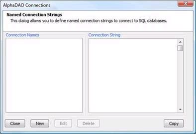
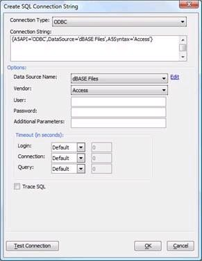

How to Create a SQL Trace from within Alpha Anywhere
1. Start Alpha Anywhere, open your Alpha Anywhere database and then select the Tools menu. Select the cascading menus entitled External Databases and then Alpha DAO Connection Strings. The following dialog will display:

2. If you have already created a connection, select the connection name you used and click on the Edit button. If you do not yet have a connection, click on the New button. The following dialog will be displayed it will be labeled New or Edit depending on which button you have clicked on:

3. Click the Build button to create or edit your connection string. The Create SQL Connection String dialog will be displayed. To enable tracing, you will need to click the Trace SQL checkbox. Note that the checkbox is toward the bottom of the dialog:

4. Save your connection string and run your test using the modified connection string
5. Once you have reproduced the error:
- From the main menu in Alpha Anywhere select View and then Trace Window.
- Once the window opens, click on the SQL tab.
- Click the button entitled Copy to Clipboard.
- Paste the contents into a text file or into an e-mail and forward them to the person who requested the SQL trace file